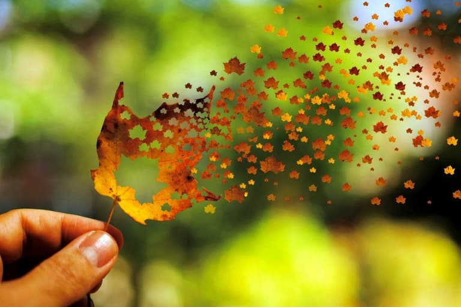

时间犹如白驹过隙，稍纵即逝。没有一点防备，就这样又要度过一个冬天了!感觉秋天就像昙花一现，温度在一夜之间降低了。没有办法，只好准备好厚厚的衣服迎接这个冬天。
也许，有的人喜欢冬天，喜欢下雪，喜欢冬天的一切。没错，我就是这样，因为是冬天，所以什么都喜欢。就像是和冬天谈恋爱一样!吹着冬天的冷风感觉整个人都冷静了许多。看着落叶飘在刚落地的雨中，感觉那地上的雨就是树叶哭泣的泪。晚上，走在路上，虽然风很冷，但身边能有一个陪我走的人，即使不是男朋友，也不会感觉风太冷。只觉得和你一起走过第二个冬天，和你一起吹着风，特别好!

有人会说能在大学里谈一场轰轰烈烈的恋爱是多么幸运。但是，我要说虽然我没有恋爱，但我有你，我亲爱的死党，你是我一生的幸运。友谊不是交易，更不需要虚伪。如果你把友谊当成交易，那么全世界都在和你做交易，在这场交易中你不会得到利益，更不会得到胜利，也许，在你眼里你赢了，你没有付出真心，却得到了别人的笑脸。但我要说你输了，而且输得很彻底。不要把别人都当作傻子，当作你欺骗的对象。人都是有感情的，没有人会对另一颗虚假的心无限付出。所以，真心对待每一个人吧!这样你才会赢得漂亮!不是吗?
可能有的人会说：你真心对待别人，可别人未必真心对你。没错，有可能这样，但是别人真心对你的前提一定是你付出真心!不必计较对方是否真的付出，只要你付出就好了。最起码，你无愧于自己和朋友，这就够了。如果你想以交易的态度交朋友，那就请你不要开始了。最终的结果无非就是你我都遍体鳞伤。这样真的好吗?我想这样的结局是谁都不愿接受的，既然在青春这条路上相遇就请彼此好好珍惜吧!
在初冬的季节，我愿拾一片落叶与你一同感受。不必多言，你就读懂了落叶和我!相视一笑，便得到安慰。这样多好，这种境界应该是朋友中最高的吧!也是我毕生所渴望的。我愿拾一片初冬的落叶，放在手上，停在心里，落在我深处的伤口。慢慢的，当它们融为一体的时候，我会说我有一个叶形的伤疤!而你会说这个伤疤很漂亮。